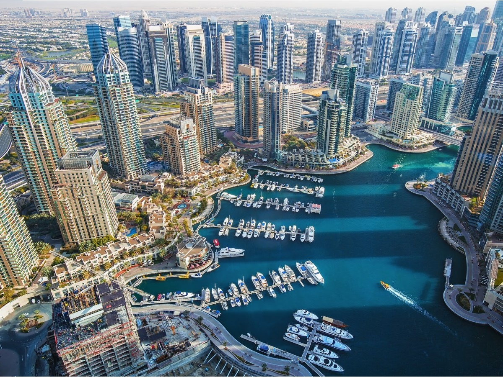
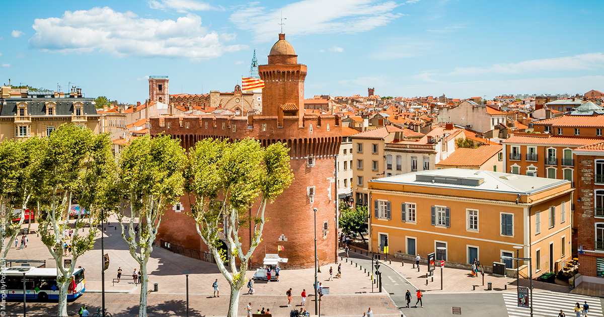
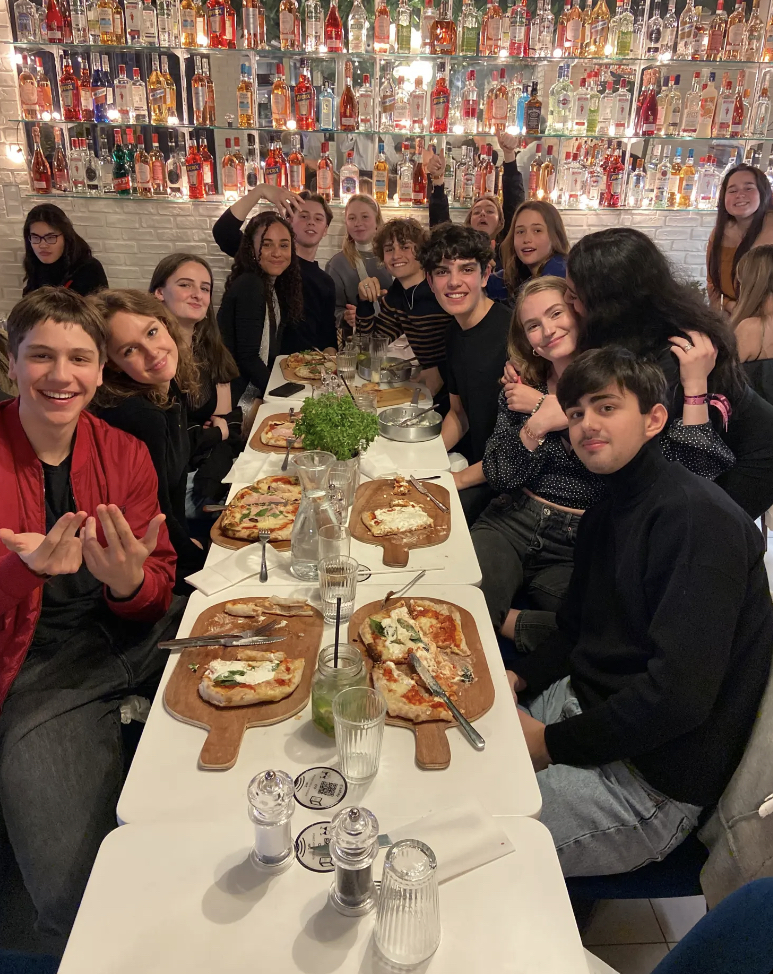

Bonjour :) My name is Justine Rousset, enchantée! As you can see I'm a french 18 y/o girl. I lived most of my life (13 years) in Dubaï, UAE and thanks to it I can speak french, english, arabic, and spanish! I am also learning Japanese this year in hope to spend a semester in Japan in third year. Indeed my ultimate dream is to become a polyglot and travel the world! I'm currently living in Cergy, were I'm studying a degree in Business Administration at ESSEC Business School.
I'm currently a member of HeForShe a feminist association in ESSEC Business School. HeForShe ESSEC is a branch of the HeForShe association of UN Women. It is a solidarity campaign for gender equality where the objective is to involve men in the fight for gender equality and women’s rights, encouraging them to take action against the inequalities faced by women and men.
Moreover I am part of the ESSEC swimming club! I stopped swimming for a long time but got back to it this summer and now I practice regularly. I get along very well with my teammates especially Elsa. She is a great friend of mine and also my roomate! Swimming club is great but it takes a lot of time in my schedule. Even if I love it I am thinking of stopping it next year to concentrate more on my studies.
I love travelling, discovering new cultures, meeting new people,etc. In my opinion, seeing the world is more educational than a high school or college class. When we travel, we have the possibility of learning a new language, a new cuisine, aspects of a different culture, or even acquiring a deeper appreciation of faith or spirituality.
Since I lived in Middle East, I traveled a lot in Asia such as Singapore, Thailand, Malaysia, Bali, Indonesia, India, and Korea. I absolutely love Asia. If I had to choose a destination to visit it would be Japan. I always loved the culture especially the beautiful sceneries and movies such as famous Studio Ghibli (my favorite is Princess Mononoke). Only disadvantage is that japanese don't really speak english so I try to learn japanese to visit this country that I love that much.💫
In summer, I spend my holidays with my family in the south of France, Perpignan. At this time, my parents often take us to visit closer countries such as Spain, Italy, Switzerland, Belgium, Croatia, Germany, and even Russia. I visited Russia 4 years ago and it was my best travel yet. I went to Moscow and St-Petersbourg and stayed 10 days in the county. The sceneries were spectacular, truly mesmerizing.

Dubaï, UAE

Perpignan, France
I was once the most active girl but due to health issues I had to stop for a while. Fortunately I got back on it and now swim and run regularly. I enjoy both individual and team sports and I have tried many diferent ones. Some of them are horse riding, volleyball, fencing, ice skating, triathlon, skiing, swimming, and gymnastique.
I believe sports have contributed a lot to my personal growth and character. They've increased my self-esteem, improved my social skills and leadership abilities, my resilience and developed a positive attitude towards hard moments. Sports have taught me that failing is completely normal when learning something new, to respect the opponents and Fairplay among many other things.
Even far from them, I'm still really close to my family and call them often. I am particularly close to my little sister and since she also wants to go to a Business School I hope she will choose ESSEC so we can be together!💫
I made some new friends here in Cergy. I had the chance to have a place in the Residence of Le Parc where I lived 4 months with 6 other girls. The best thing is: I'm still close friend with some of them! I even moved with 2 of them in another appartement and we are planning to go on vacation together! Fortunately, I still see my old friends from Dubaïn as a lot of them also came in Paris to study. We see eachother once in a while and we always have a good time! 